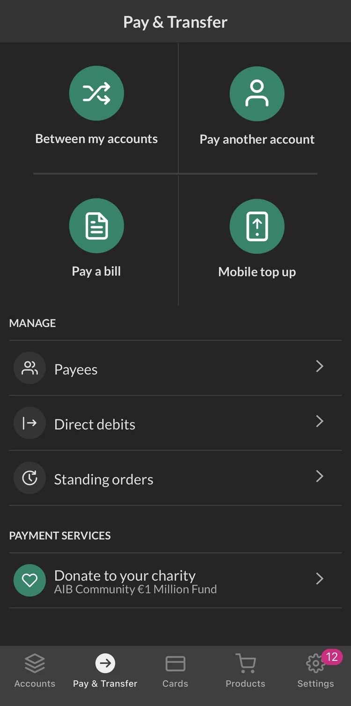
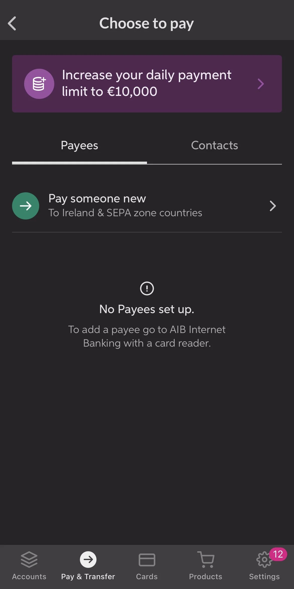
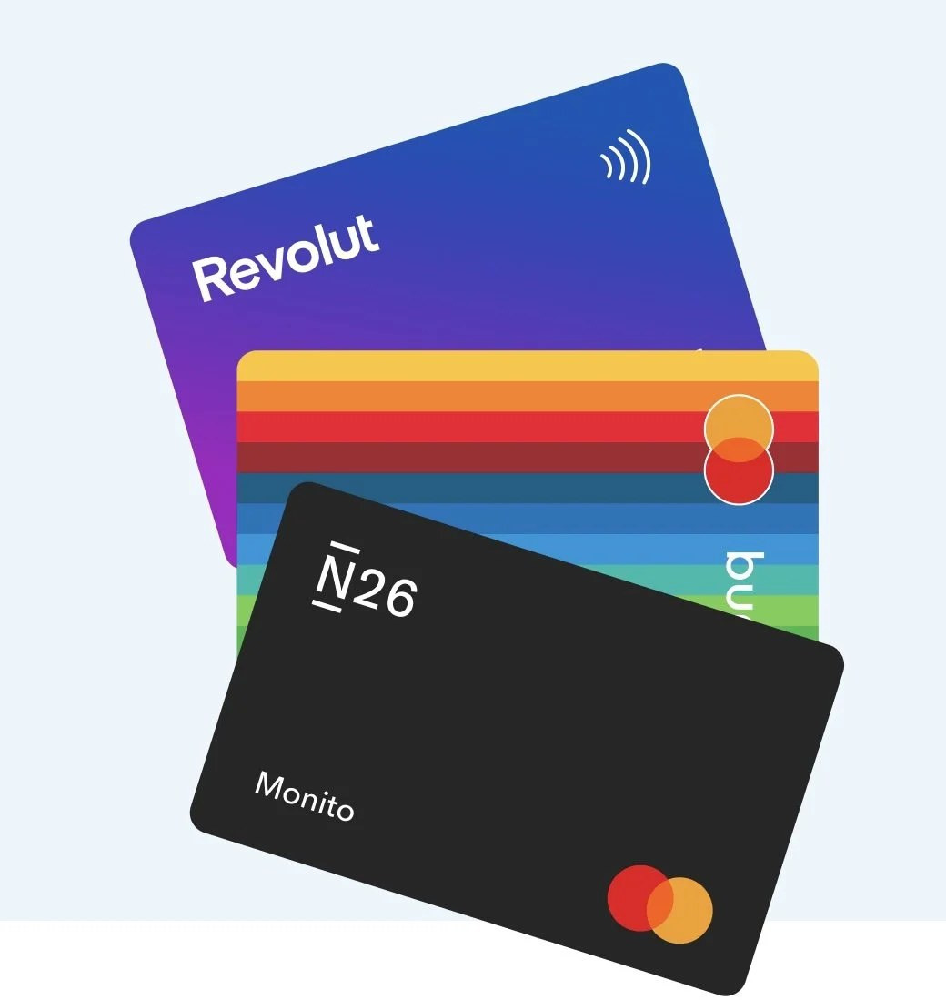
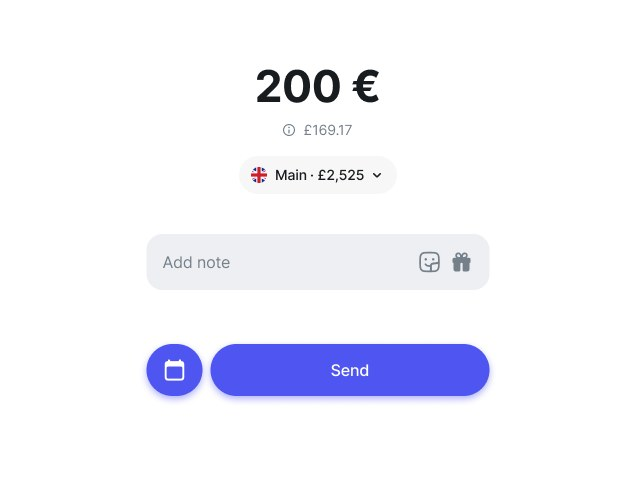

Project 01 · Digital banking
AIB Bank: Improving Pay & Transfer
AIB is one of Ireland's largest banks, and its Pay & Transfer flow is one of the most used features in the app. My work was to audit that flow against the bar that challenger banks had quietly reset across Europe, and propose a version that felt just as fast, without losing what a regulated bank has to get right.
Section
Context
A core banking flow, held to a challenger-bank bar.
Pay & Transfer is where a banking app either earns trust or loses patience: it is where members move their own money between accounts, pay someone new, pay a bill, or top up a phone. AIB's version worked, but it had been designed in an era before Revolut, N26 and Monzo reset what 'fast' means for a transfer.

Section
Journey audit
Three moments where the flow quietly lost people.
I mapped the existing journey end to end, from choosing a payee to confirming a transfer, looking for the exact steps where hesitation or drop-off was most likely.
IBAN format guidance was unclear, with no real-time validation, so people only found out they had made a mistake after submitting.
Fields filled in silently, with no confirmation that a step had gone well, which is a poor fit for a task that involves someone's money.
At €10,000 a day, the limit is a reasonable security measure, but the app offered no clear, self-service way to raise it when a real need came up.

Section
Proposed improvements
Make the safe path also the fast path.
Simplifying payee addition
I proposed a step-by-step assistant with real-time IBAN validation and clear format examples, camera-based IBAN scanning to remove manual typing, and smart suggestions drawn from past transfers or phone contacts.
Visual feedback and microinteractions
Small moments of confirmation matter more in banking than almost anywhere else: a fade-in of the bank name once an IBAN validates, a checkmark on a correctly filled field, and error messages that explain what went wrong and how to fix it, instead of a generic 'invalid input'.
Contacts and instant payments
I proposed letting members link a phone number to their account and pay contacts directly, backed by SEPA Instant for near real-time settlement. Paying a phone contact instantly is not a new idea globally, it is the same underlying pattern behind Brazil's Pix, but in 2024 it was still missing from AIB's core flow while challenger banks in the same market already offered it.
A self-service path to a higher limit
Rather than treating €10,000 as a hard wall, I proposed a self-service option to request a temporary increase, with additional authentication and plain-language explanations of what changes and what the added risk actually is.
Section
Competitive benchmarking
Reading the market before redesigning a single screen.
Before proposing anything, I ran a structured benchmark of the digital banks that had already reset expectations in this space, not to copy them, but to understand which patterns had already become the baseline a traditional bank would be silently compared against.

Simple, intuitive payee addition, real-time IBAN and payee validation, instant payments to phone contacts. Applied to AIB as the model for real-time validation and instant payments.
Flexible payment limits with a temporary increase option, and clear visual feedback throughout the transfer. Applied to AIB as the model for the limit increase flow and step-by-step feedback.
A guided, step-by-step assistant for adding payees, with contact integration and instant payment services built in. Applied to AIB as the model for the payee assistant and contacts integration.
Zooming out past Europe for a moment, Brazil's Pix was a useful reference point too: a phone number or a simple key resolving instantly to a real transfer, no IBAN required. It is a different regulatory context, but the underlying UX lesson travels well, resolving an identity to a payee should feel closer to sending a text than filling out a form.

Success criteria and impact
Defining 'better' before building it.
Part of proposing a redesign to a regulated bank is being explicit about how success would be measured, not just what would change on screen.
- Transfer completion rate: fewer people abandoning mid-flow
- Average transfer time: less time from intent to confirmation
- Support cost: fewer errors from invalid IBANs and unclear limits
- User satisfaction: tracked through direct feedback and surveys
Beyond this specific flow, my broader work at AIB during this period included well-defined prototyping processes that reduced development time, a 15% increase in engagement measured through user research and A/B testing, and WCAG 2.1 accessibility improvements that made the app usable for more people, not just faster for the average one.
What this project reinforced is that in banking, speed and safety are not opposites to trade off, they are the same design problem seen from two angles. The fastest flow is the one where the person never has to wonder if it worked.
Note: this case reflects a UX audit and redesign proposal developed during my time at AIB Bank. Some details were adapted to preserve confidential information.
Want to see another project?
There is also a banking case with Banco do Brasil and a healthcare app redesign for Unimed in the portfolio.
View all projects